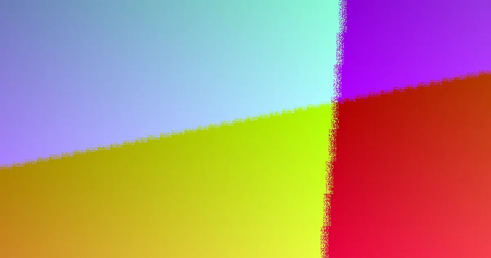

When selecting a web designer in Adelaide, scrutinise proposals for clarity on scope, timeline, ownership, and responsibilities. A well-defined written scope, itemised pricing, and clear ownership terms are crucial. Most small business websites take 3-8 weeks to build, with costs starting in the low thousands for simple sites. Ensure mobile optimisation and basic SEO are included from the outset, and confirm handover details for full website and content ownership post-payment.
For local buyers, web design adelaide red flags understanding the critical factors that differentiate a successful web project from a costly misstep.
Web Design Adelaide Red Flags Explained
Choosing a web designer in Adelaide involves more than just comparing visual styles; it requires a deep dive into the specifics of the project. The foundational step is a clear, written scope that details exactly what will be built, what is included, and the responsibilities of both parties. This document serves as a crucial decision-making tool, preventing future confusion. It should outline planning, design, build, and launch phases, along with essential elements like mobile optimisation and basic on-page SEO setup. Understanding what is included, such as content structure or training, versus what is separate, like ongoing maintenance, is vital for accurate budgeting and expectation setting.
Matching Platform to Business Needs
The choice of website platform significantly impacts usability and functionality. For businesses that need to update content regularly, a platform that allows easy editing without constant developer intervention is key. Conversely, for sites focused on generating leads or sales, the emphasis should be on fast loading speeds, building user trust, and a streamlined path to enquiry or purchase. Custom builds cater to unique business goals and target audiences. When comparing proposals, consider how each platform aligns with your day-to-day operations and long-term objectives. If your existing site has search rankings, a redesign brief must address how these will be preserved during the transition to a new site.
Cost and Timeline: Filters for Quality
While pricing can vary, a general guideline helps screen initial proposals. Simple brochure-style websites for small businesses typically start in the low thousands. More complex projects, such as custom builds or e-commerce sites, will incur higher costs. It's important to remember that hosting and domain renewals are separate, ongoing expenses. Therefore, an itemised proposal offers more clarity than a single, all-encompassing figure. Timelines also serve as a critical indicator. Most small business websites are completed within 3 to 8 weeks, though this depends on the project's scope and the timely provision of content and approvals. Simple one-page sites may be quicker, while extensive custom builds require more time. Aligning project deadlines with business campaigns or launches requires proactive content supply and early feedback to keep the project on track.
Ownership, Access, and Post-Launch Support
Clarifying website ownership is paramount. Once the build is fully paid, the finished website and all its content should belong to you, allowing for future flexibility in hosting or development. Understanding the practical handover process is essential. This typically includes access to the website's backend, hosting details, domain registration, and any connected third-party services. Many providers offer ongoing maintenance plans that cover updates, security, and support. Deciding whether you need continuous assistance or a clean handover with occasional support available is a key consideration for long-term website health and management.
- Define Your Website Goal. Determine if you need a new website, a redesign, a landing page, or a more complex e-commerce solution before comparing options.
- Request Written Scope. Ensure all quotes include detailed inclusions, exclusions, pricing, and clear next steps in writing for fair comparison.
- Match Platform to Usage. Select a build that suits who will update the site post-launch, prioritising ease of use or specific functionality as needed.
- Set Timeline Inputs. Agree on milestones early and confirm what content, feedback, and approvals are required from your side to meet launch dates.
- Confirm Ownership and Support. Verify that you will own the website and content upon full payment, and understand the available post-launch support options.
Common questions
How much does a website cost in Adelaide? Prices vary based on complexity. A simple brochure site typically starts in the low thousands, while custom or e-commerce sites cost more. Hosting and domain renewals are additional ongoing costs.
How long does it take to build a website in Adelaide? Most small business websites take between 3 to 8 weeks from brief to launch, depending on the scope and how quickly content is supplied. Simpler sites can be faster.
Who owns the website after it's built? Generally, you own the content and the finished website once you have paid for the build in full, allowing you to move it or update it as needed.
This guide applies to Adelaide businesses seeking web design services, focusing on understanding project scope, costs, timelines, and ownership.